事前情報の通り、２０２３年１２月の第２週目にバンダイより『ミルモでポン！ならぶんです。』が発売されました。
実際に入荷され店頭に並んだのは１２月７日だったようです。
私の方も１２月９日にガチャガチャを回しに出かけました。
よく行く新宿の「ガチャガチャの森」で発見・・したものの、回す直前にまさかの売り切れ。。
その後池袋へ移動して、バンダイのお膝元でもある「ガシャポンのデパート池袋総本店」にて無事にゲットできました。
それではゲットの模様や商品内容をレポートいたします。
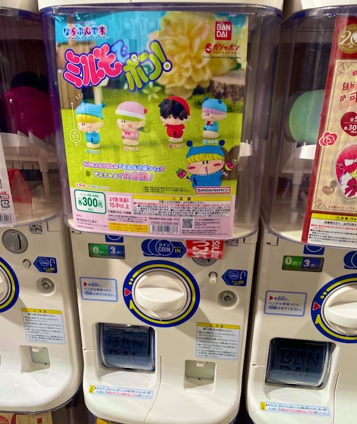新宿サブナード内にある私の行きつけの「ガチャガチャの森」にて。
見つけた！と喜んでいる間に、私の前のお客さんでまさかの売り切れ・・(T-T)
でもミルモが大人気商品であることを知れてうれしかったです。
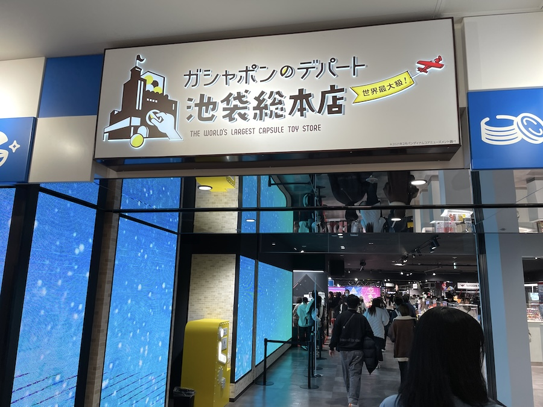池袋サンシャインシティにある「ガシャポンのデパート池袋総本店」へ移動〜。
世界最大級だけあって店内は広くガチャガチャ台も多過ぎで、子連れで来ると迷子になりそうです(^^;
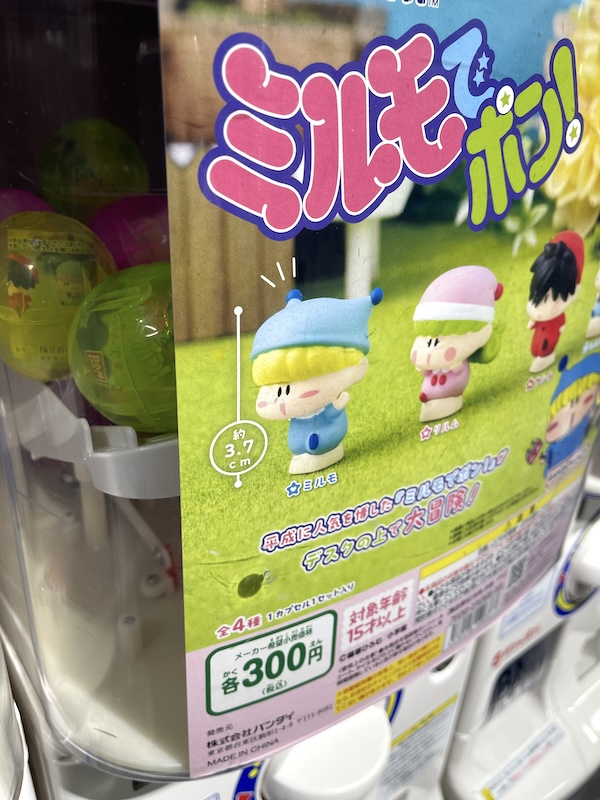さすがにバンダイ直営のお店なので、十分すぎるほどたくさんありました！
これなら心置きなくたくさん回せますね(^^)
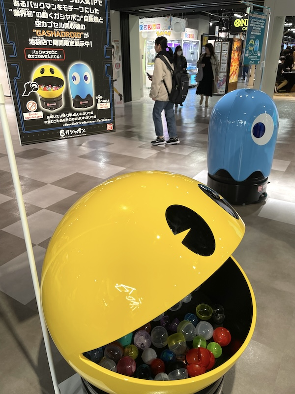ガチャガチャ専門店なのでいろんなものが置いてあります。
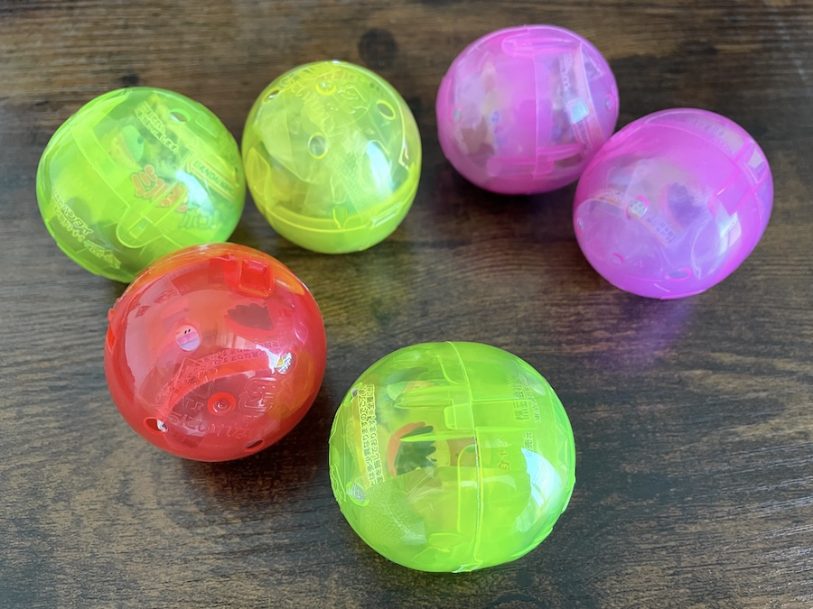帰宅して開封の儀式です。
私の方は６回回してリルム→リルム→ヤシチ→ムルモ→ミルモ→ムルモの順番に出てきてくれました。
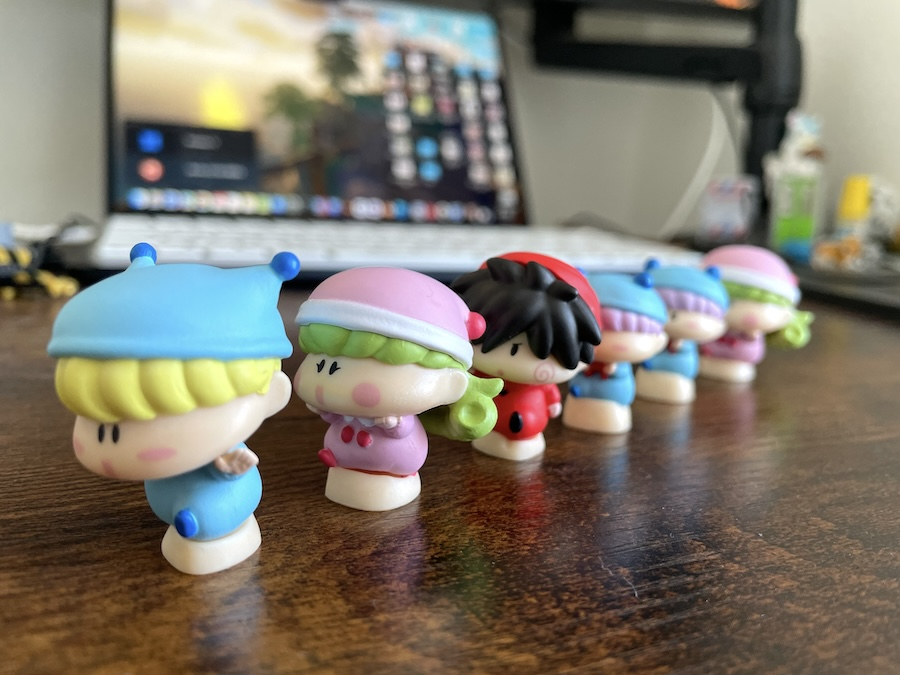早速ならべてみました。
台座に妖精たちを乗せるのですが、結構乗せるのが大変で（すぐに台座から落ちてしまう）写真撮影にかなり時間がかかりました・・(^◇^;)
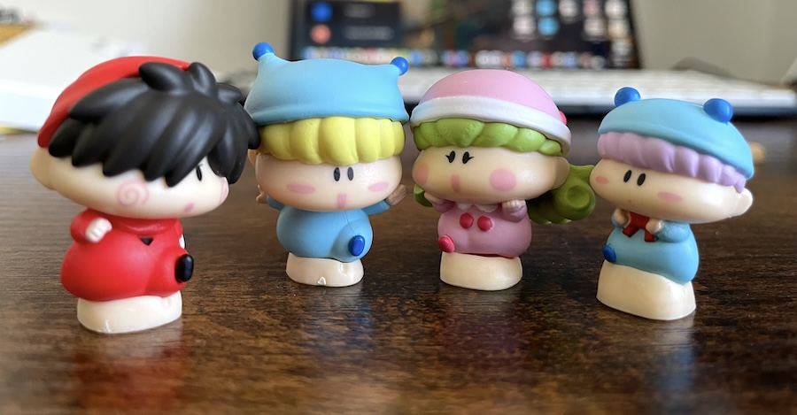横一列に並べてみました。
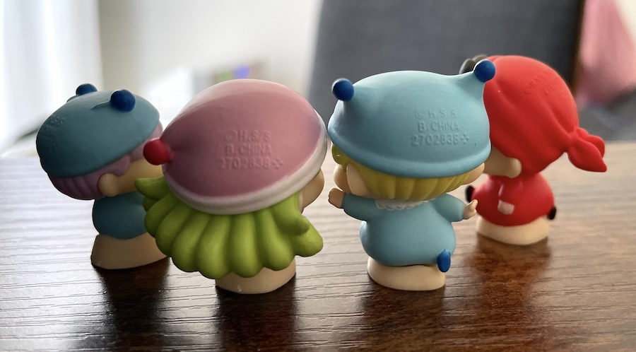後ろからも撮影〜
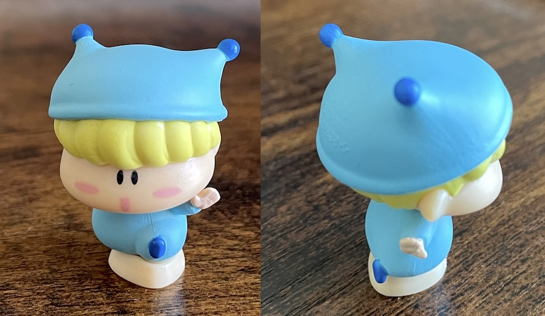ここからは１つ１つ見ていきます。
ミルモの帽子の形もうまく再現されていますね。
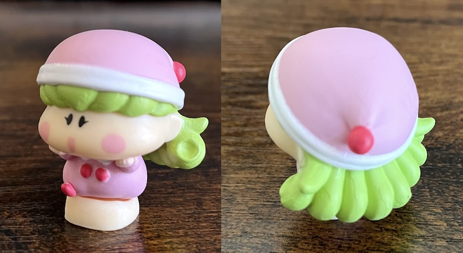リルムの複雑な髪の再現度がすごい！
ミルモ現役の頃にここまでうまく再現した商品はなかった気がします。
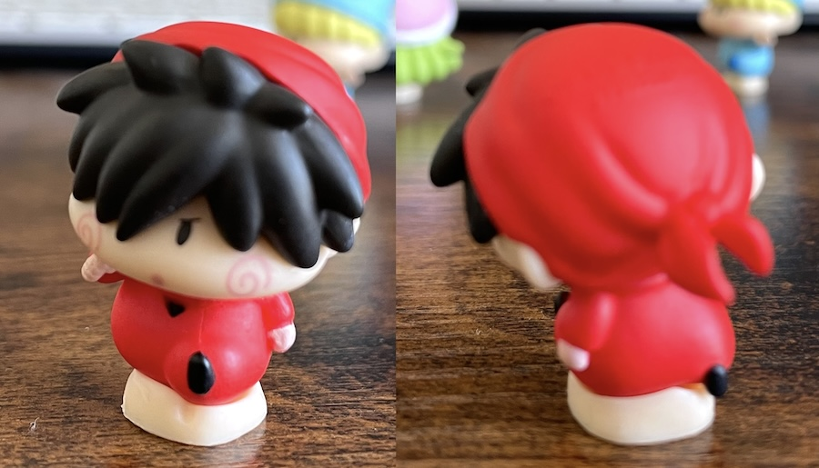ヤシチは思いっきりピンボケしてしまった・・
頭巾の結び目とシワ、そして髪のボサボサ具合もしっかり表現されてます。
昔のグッズだとヤシチの髪は平坦だったので、技術の進歩を感じます。
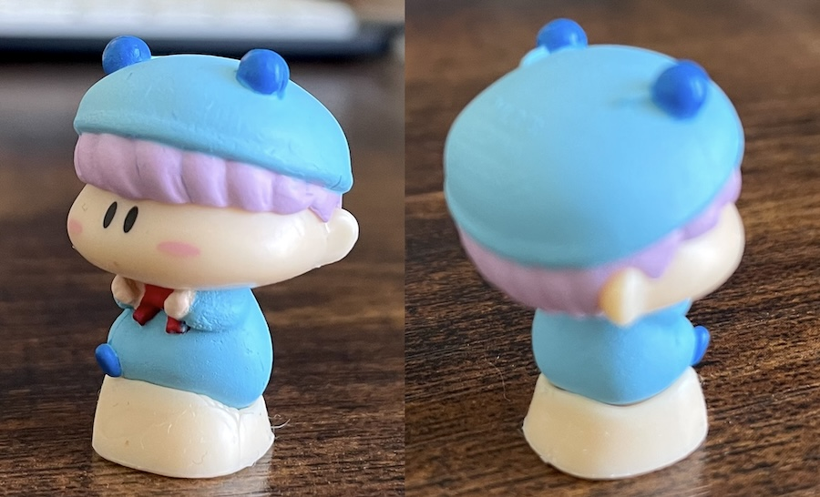最後にムルモです。
他の妖精よりもサイズが小さいので、他の妖精と並べるとムルモのかわいさが引き立ちます♪
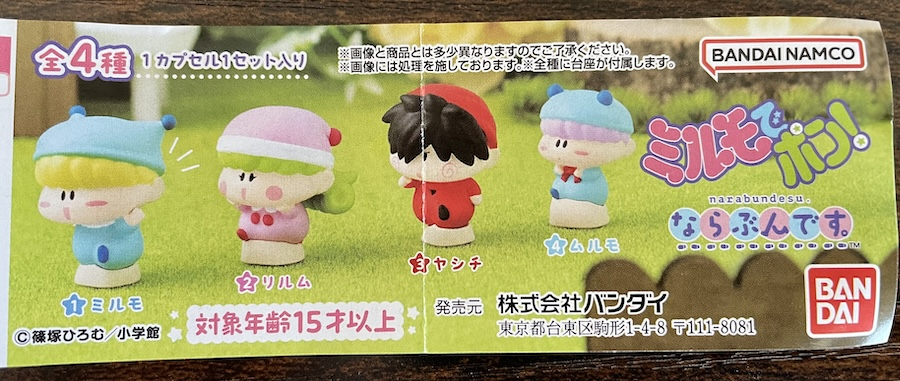最後にリーフレットを載せます。
対象年齢１５歳以上ということで大人向け商品なのですね(^^;
さすがはプラモデルのバンダイ、とにかく造形の細かさや表現力の高さにびっくりしました。
立体的な妖精グッズはかなり久しぶりなので、ぜひ第２弾もお願いしたいですね。
第２弾はパピィやサスケハンゾーヤマネといったちびっこ妖精でぜひぜひ☆
(2023/12/10)